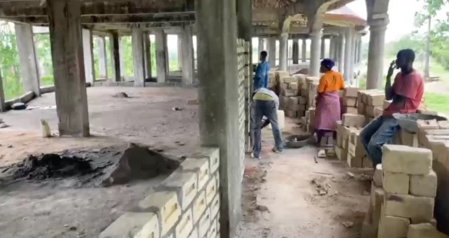
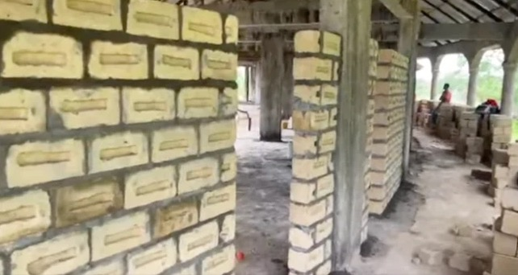

Family Empowerment Through Waqf Orchards · Sierra Leone
We are designing a school orchard and hands-on curriculum so students can grow, preserve and sell their own food, and carry that knowledge home to their families.
Source: World Food Programme, as cited in the project brief.
Agriculture is underused as a path to dignity and self-sufficiency. Families depend on outside aid that comes and goes, while fertile land around them sits idle and fruit that is grown often spoils before it can be eaten or sold.
We are designing a curriculum and hands-on experience for students to learn how to sustain an orchard, built around the school now under construction.
Planned blocks for quick crops (banana, papaya), mid-term citrus and long-term mango and cashew, showing where crops are planted, irrigated and harvested.
Composting, roof rainwater and drip irrigation, and food storage: solar drying and evaporative cool stores.
Students help grade, pack and sell surplus produce, with income returning to the school and the families who tend the trees.
The Isra Ihsan Sadreddin Academy is under construction. The 3D model shows our vision of the completed school and its orchard.


By teaching students how to grow, preserve and manage their own food, we can create a sustainable system that addresses food insecurity while providing valuable life skills. Rather than relying on outside aid, students gain the knowledge to support themselves, generate income, and share these practices with their families and communities, creating long-term impact beyond the school.
Fresh fruit at school meals and a share of every harvest for families.
Market sales of fresh and preserved produce fund the school and families.
Students carry agricultural skills home, building a sustainable system beyond the school.
Choose crops that thrive in Sierra Leone's soil and climate. Plan blocks, spacing, paths and water lines around the school. See it in 3D
Rainwater tank and drip irrigation, a three-bay compost station, a seedling nursery, and solar drying plus cool storage. See it in 3D
A hands-on curriculum where students grow, maintain, harvest and preserve food, with stewardship and gratitude woven through. See it in 3D
Grade, crate and truck produce to market; students learn record-keeping and pricing. See it in 3D
School meals, family shares and seedlings for neighbors keep food circulating locally. See it in 3D
A working outline of the year. Modules, lesson plans and assessments are still being developed with stakeholders.
The orchards are established as waqf: endowed charitable assets. A family or school receives an established orchard that feeds them, that they can monetize, and that builds environmental stewardship and responsibility across generations.
Zakah is intended to end poverty. This project breaks a cycle of poverty as well as honoring our role as good stewards (khalifa) of the earth.
Stakeholders: Ahmed and Dr. Bangura with Ihsan Foundation staff on the ground. Planned interviews: Br. Abdel Rahman (tree planting with orphans in Somalia, Ihsan Board), Ihsan staff, a Stanford sustainability professor working on farming in West Africa, and a permaculture specialist in West Africa.
See what's grown, how it's preserved, and where the food goes.
Open the 3D model →